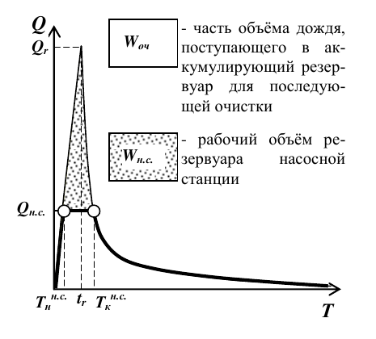

Исходные данные
Производительность нс
График стока Q(T) ▾

Результаты
Подбор: производительность нс ↔ рабочий объём резервуара нс
Таблица вариантов
| Qнс, л/с | Qнс, м³/ч | Tн, мин | Tк, мин | Wнс, м³ | Наполнение, мин |
|---|
Перекачка незарегулированного дождевого стока

| Qнс, л/с | Qнс, м³/ч | Tн, мин | Tк, мин | Wнс, м³ | Наполнение, мин |
|---|